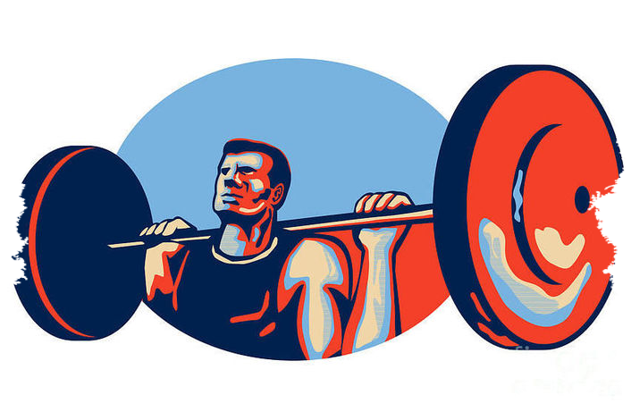
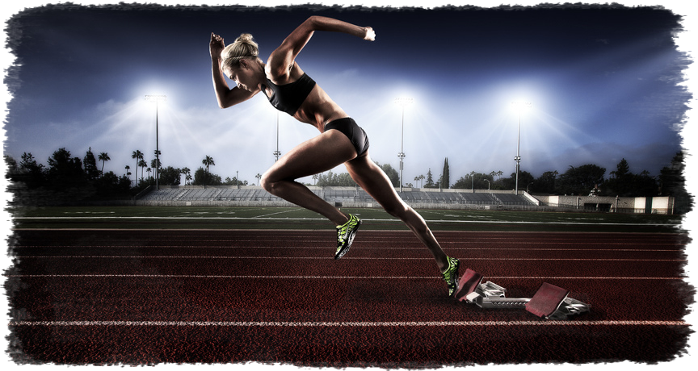
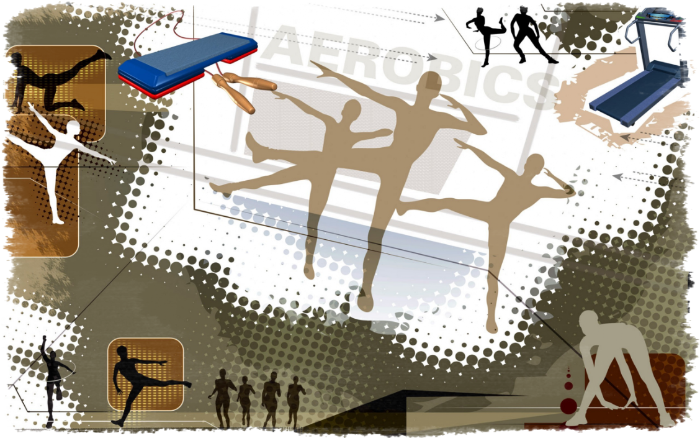
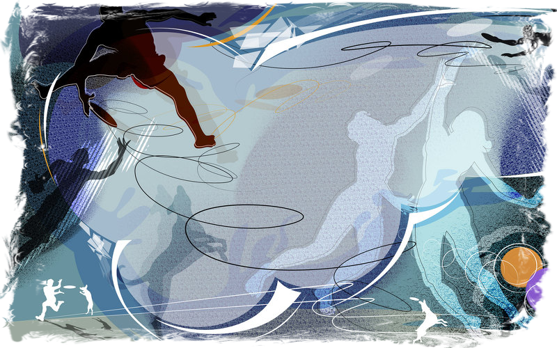

Профессиональный спорт - Спорт

SPORT
Здоровье до того перевешивает все остальные блага жизни, что поистине здоровый нищий счастливее больного короля.
Профессиональный спорт: что это такое, чем отличается от любительского
Спортивная тема на данный момент очень обсуждаемая и популярная. Грани между любителями и профи становятся тоньше, а то и вовсе стираются. Зачастую люди пускаются в споры, уверяя, что при активных занятиях и достижении определённых результатов, и разницы между этими двумя подходами нет. Но она есть, и достаточно существенная. Внесем максимальную ясность в определение: профессиональный спорт – что это такое, узнаем отличие понятия от любительского развлечения и чем поддерживается соревновательный дух?

Существует две интерпретации термина:
- В узком понимании – это соревнования, в которых основной акцент поставлен на зрелищность и коммерческую составляющую, другими словами – на получение дохода с мероприятий для всех участников: для спортсменов и тренеров, организаторов и обозревающих медиакомпаний. В этом смысле – даже усиленные и регулярные занятия с тренером не делают из занимающегося профи. Здесь всё дело именно в налаженном шоу-производстве.
- А при широком рассмотрении – под понятие подпадает любая спортивная деятельность на полную занятость, за которую также подразумевается финансовое вознаграждение.
Причина такого подхода к денежному вопросу более чем очевидна: для достижения максимальных показателей необходимо относиться к тренировкам, как к профессии и заниматься исключительно работой на результат.
Не менее важный аспект, который напрямую влияет на уровень спортсмена – это экипировка. И, если с летней всё довольно просто, то для получения высоких показателей в условии холодов, форма должна отвечать всем требованиям, предъявляемым к защите, теплопроводности и износостойкости. Именно такую зимнюю одежду и предлагает бренд Stayer. Многие профессионалы покупают у российского производителя качественные горнолыжные и сноубордические костюмы.
Профессиональный спорт: история и современное состояние
Для глубокого понимания вопроса рассмотрим истоки спортивных соревнований, которые отсылают нас к историческим писаниям Древней Греции, датированными IV веком до нашей эры. Первые упоминания, которые доступны нам – происходят именно с тех времён. Наиболее популярными, в проходивших в древности Олимпийских играх, были довольно ожесточенные состязания по кулачному бою и борьбе. По факту – это были беспощадные сражения без правил, заканчивающиеся полным изнеможением одного из участников поединка.

Это направление получило естественное и очень быстрое развитие. Через некоторое время к участию начали допускать спортсменов из других стран. Для некоторых участников, денежное поощрение за победу было единственным способом улучшить свой статус и финансовое положение. За всю историю Древнегреческого периода состоялось 293 соревновательных празднеств.
В связи с началом упадка Греческой цивилизации, игры стали проводиться на территории Рима. Первые зрелищные бои в Римской Империи датируются 186 годом до нашей эры. Тогда же зародились и спортивные профсоюзы, защищающие права борцов-профессионалов. Из заслуженных игроков формируется тренерский состав, появляются разнообразные методы тренировок для совершенствования техник ведения поединка.
Также в это время начинают уделять большое внимание диете спортсменов и их физическому состоянию, для поддержания которого разрабатывается специальная гимнастика. Отдельным направлением становится эффективная подготовка атлетов к поединкам и их восстановление после игр.
Следующей значимой вехой в развитии был период зарождающейся буржуазии XVIII века. Новый толчок был дан благодаря Английскому и Американскому обществу, которые начали активно развивать систему денежного и статусного вознаграждения победителя. Этот период также считается моментом расширения разновидностей соревнований: добавились конные и водные поединки. Вскоре в списке признанных Олимпийскими организациями, стали появляться и игровые состязания.
Таким образом, спортивные соревнования достаточно быстро приобрели популярность и превратились в целую индустрию, со всеми нюансами, которые мы можем наблюдать в наши дни.
Современные особенности профессиональных видов спорта:
- Максимальное развитие наиболее прибыльных направлений.
- Использование уникальных методик тренировки и мотивации.
- Поддержание популярности и элитарности спортсменов.
- Создание настроений повышенной конкуренции.
- Активное использование социальной и правовой защиты.
- Разнообразие источников финансирования.
Профессионализация в наше время подразумевает крайне высокую коммерческую составляющую всего процесса, что влечет за собой четкое следование не только спортивным нормативам, но и соблюдение определённых бизнес-схем.
Значение и развитие мирового профессионального спорта для общества
Воздействие индустрии состязаний на все основные сферы нашей жизни по-настоящему велико. Огромное влияние происходит и на моду, ярко отражаясь на повседневном стиле летних и зимних видов одежды. Например, одежда «Стайер» является не только спортивной, но и активно используется в повседневной носке.

Спорт сейчас проявляет себя как крайне вовлекающее и объединяющее людей движение, способное объединить и сплотить нацию. Основным её созидающим качеством остаётся формирование тренда всеобщего оздоровления и возрождение моды на физическую культуру. Также немаловажной составляющей становится психологическое влияние на человека. Именно здесь проявляются и культивируются те качества, которые выступают основополагающими элементам успеха: умение владеть собой и достигать цели, стремление к победе и к максимальным результатам, а также здоровое соперничество и вера в себя.
Функции профессионального спорта
- Улучшение здоровья. Благодаря строгому режиму дня и физической активности происходит укрепление мышц и иммунитета. Важным моментом здесь является оптимальность программы тренировок, согласованной с возможностями организма.
- Воспитание внутренней силы. Тренировочные условия подразумевают развитие высоких моральных норм, таких, как лидерство и умение работать на результат, полностью отдаваясь процессу. А так как всё это проходит в условиях жёсткого соперничества – обязательно обладание такими этическими ценностями: умением работать в команде, а также с уважением относиться к успехам конкурентов.
- Научные достижения. Стремление к максимально возможным показателям – причина постоянного поиска новых знаний об организме человека, о его возможностях и способах их расширения. Благодаря этому проводится огромное количество исследований, которые, в свою очередь, находят применение и в обычной жизни.
- Влияние на эмоции. Спортивные зрелища всегда являются источником ярких чувств у болельщиков, способствуя выбросу разного рода гормонов.
- Развлекающая функция. Зрелищность и яркость состязаний помогает расслабиться и отвлечься от повседневной суеты.
- Коммуникативность. Болельщики одной команды всегда обладают особым отношением друг к другу, так как объединены общим интересом.
- Моделирование поведенческих образов. За счёт того, что вокруг спортсменов-профессионалов создан ореол элитарности, их поведение становится моделью для подражания. В особенности это относится к представителям молодого поколения.
- Формирование веры в успех. Благодаря наглядной демонстрации возможности для любого участника общества добиться высоких спортивных результатов, повышается общая уверенность в способности достижения определенного социального статуса, которыми обладают те, для кого это стало профессией.
- Реклама и медиа. Принимая во внимание, что такое профессиональный зрелищно-коммерческий спорт – развитие медиа-индустрии, которая его обслуживает, происходит в геометрической прогрессии. Это обусловлено необходимостью наращивания аудитории и увеличению потребительской активности.
- Интеграция всех сфер жизни. Активная популяризация уже давно повлияла на объединение большинства аспектов жизни, соединив вместе всё: от культуры общения и питания до стиля одежды. Ярким примером может быть одежда от компании Stayer. Стильные комбинезоны имеют яркую и оригинальную расцветку, узоры, принты.

Это основной список понятий, на которые влияние оказывается напрямую. Но, в реальном мире оно значительно более широко и многогранно, что обусловлено взаимосвязанностью всех процессов, протекающих в обществе.
Развитие и цели профессионального спорта в России
В нашей стране спортивные профессии появились сравнительно недавно (относительно остального мира). С началом буржуазных реформ XIX века в России начали создаваться как любительские союзы, так и организации, набирающие спортсменов, для которых это станет карьерой. Началом процесса, так же как и в остальных странах, явилась культивация борьбы и атлетики. Через некоторое время стали добавляться и другие разновидности соревнований.
Помимо того, что профессиональные и любительские команды появились у нас одновременно, тренировки также зачастую проходили в одно время. Дополнительной особенностью являлось применение цирковых арен вместо специализированных залов. Это помогло сформировать высокую популярность атлетических достижений.
Но дальше атлетики в России дело пошло только в начале XX, до этого времени находясь буквально в зачаточном состоянии, значительно уступающем по уровню и количеству видов другим странам.
Начало рассвета государственного спортивного профессионализма пришлось на 30-е годы и усилилось в послевоенный период. К середине века тенденции возросли благодаря государственной поддержке профессионализации спорта. С этого времени началась выплата стипендии, которая позволила спортсменам больше отдаваться тренировкам. Но настоящую финансовую и социальную поддержку игроки получили только после 1972 г., показав уникальные результаты в состязании с хоккеистами Канады. Именно благодаря этой победе, стало очевидно, что профессиональные занятия спортом это то, на что стоит обратить внимание на государственном уровне.
На данный момент, влияние государства постоянно снижается, уступая место коммерческим компаниям, владеющим большинством клубов и заинтересованным в высоком уровне игроков, обеспечивающих финансовую выгоду. Именно это и отражается на целях, которые поставлены перед командами: зрелищность, а также поддержание популярности, включающее медийность и подпитывание интереса у зрителей.
Подводя итоги статьи, обобщим: спортсмен профессионал – это достижимая цель, возможность выйти на мировой уровень каждому, кто готов проявить максимальную силу воли и стремление к профессиональным победам.